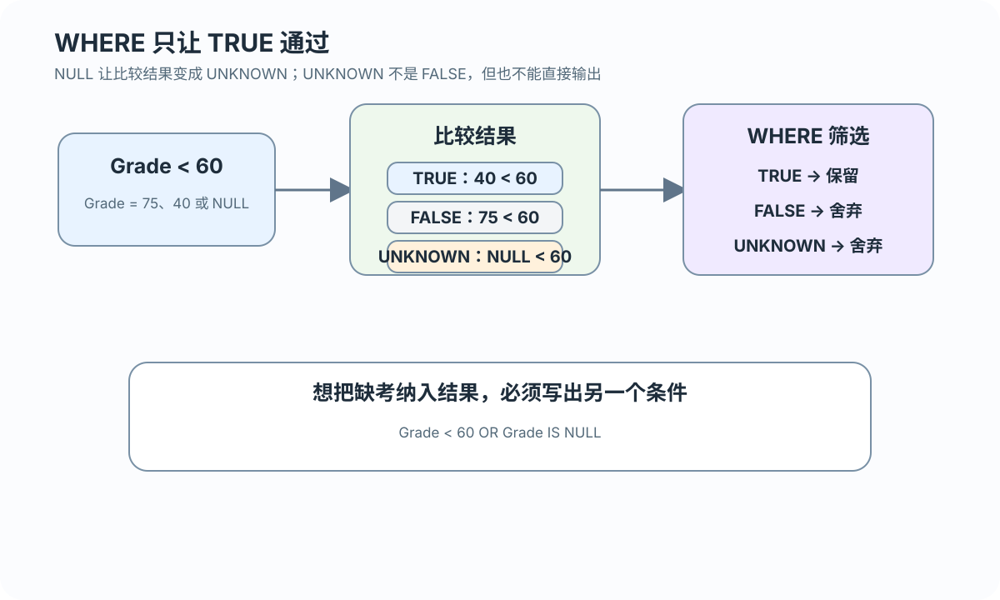

插入
省略可空列或显式写入 NULL；SC.Grade 未列出 → NULL
为什么没有值会改变查询结果
 VER. 2608.2
Built with impress.js
VER. 2608.2
Built with impress.js
NULL 的业务语义会影响约束判断、运算结果和查询筛选
NULL 表示当前没有确定且可用的值；具体原因可能是未知、不适用或不便提供
| 语境 | 含义 | 例子 |
|---|---|---|
| 未知 | 应该有值但目前不知道 | 漏填出生日期 |
| 不适用 | 当前对象或状态不需要这个值 | 缺考没有成绩 |
| 不便提供 | 值可能存在，但当前不宜填写 | 不愿公开的联系方式 |
0 是已知数值零；'' 是已知的空字符串；'NULL' 是四个字符的文字；NULL 不是它们中的任何一个
显示或统计 NULL 前，必须先确定它的业务语义
插入、更新和外连接产生 NULL 的位置与业务语义不同
省略可空列或显式写入 NULL；SC.Grade 未列出 → NULL
UPDATE ... SET Smajor = NULL，元组仍存在而属性被置空
未匹配时另一侧列只在查询结果中补为 NULL，不写回基本表
空值不是删除记录的替代方式
省略 INSERT 列表中的列不会删除表列，而是让该元组在该列取 NULL 或默认值
01
02
03
04
05INSERT INTO SC(Sno, Cno, Semester)
VALUES ('20180006', '81004', '20211');
-- Grade、Teachingclass 未列出，因此取 NULL
-- 显式写 NULL 也会得到相同结果显式写 NULL 或省略可空且无 DEFAULT 的列会产生 NULL；NOT NULL 且无 DEFAULT 的列不能省略，有 DEFAULT 时取默认值
等号比较不能把 NULL 当成普通常量
01
02
03SELECT Sno, Cno
FROM SC
WHERE Grade IS NULL;| 写法 | 作用 | 结论 |
|---|---|---|
Grade IS NULL | 找到缺少成绩的记录 | 正确判断 |
Grade IS NOT NULL | 找到已有成绩的记录 | 正确判断 |
Grade = NULL | 把空值当普通值比较 | 得到 UNKNOWN，不是 TRUE |
主码、非空和唯一约束的边界不同
| 约束 | 空值边界 | 课堂判断 |
|---|---|---|
NOT NULL | 禁止该列为空 | 必须提供值或默认值 |
主码（Student.Sno） | 不能为空且必须唯一 | 不能用 NULL 标识主体 |
复合主码（SC.(Sno, Cno)） | 组合唯一且两个组成列都不能为 NULL | Sno、Cno 单列可以重复 |
UNIQUE（扩展示例） | 标准约束；多个 NULL 的处理由 DBMS 定义 | 当前 Student/SC 基础 DDL 未定义；MySQL 8.4 的可空 UNIQUE 可允许多个 NULL |
可空外码（Course.Cpno） | NULL 不要求匹配父表；非 NULL 必须有效 | 空外码不等于无效外码 |
UNIQUE 本身是标准约束；可空 UNIQUE 的多个 NULL 只是产品边界，不是当前 Student/SC 已有的约束
含 NULL 的值无法与另一个值确定大小或相等关系
含 NULL 的算术表达式结果通常仍然是 NULL
含 NULL 的比较结果是 UNKNOWN，而不是 FALSE
WHERE 和 HAVING 只保留结果为 TRUE 的行或组
下表列出涉及 UNKNOWN 的典型组合；交换 x、y 可得到对称组合，完整真值表还包含其他组合

| x | y | x AND y | x OR y |
|---|---|---|---|
| TRUE | UNKNOWN | UNKNOWN | TRUE |
| FALSE | UNKNOWN | FALSE | UNKNOWN |
| UNKNOWN | UNKNOWN | UNKNOWN | UNKNOWN |
FALSE AND UNKNOWN = FALSE ｜ TRUE OR UNKNOWN = TRUE ｜ NOT UNKNOWN 仍然是 UNKNOWN
缺考记录不会被 < 60 自动当作不及格
01
02
03
04
05
06
07
08
09
10
11-- 只找确实不及格的学生
SELECT Sno
FROM SC
WHERE Grade < 60
AND Cno = '81001';
-- 如果业务也要包含缺考
SELECT Sno
FROM SC
WHERE Cno = '81001'
AND (Grade < 60 OR Grade IS NULL);第一条只返回确实不及格的学生；第二条把缺考记录显式纳入。WHERE 与 HAVING 都只保留 TRUE，第二条用 OR 把 NULL 记录纳入结果
统计元组与统计非空列值不是同一个问题
| 写法 | 统计对象 | 空值影响 |
|---|---|---|
COUNT(*) | 元组数量 | 不因某列为空而减少 |
COUNT(Grade) | 非空成绩数量 | 跳过 Grade 为 NULL 的行 |
AVG(Grade) | 非空成绩平均值 | 不把缺考当成零分 |
若成绩为 80、NULL、60：COUNT(*) = 3，COUNT(Grade) = 2，AVG(Grade) = 70。若一组 Grade 全为 NULL：COUNT(Grade) = 0，AVG(Grade) = NULL，HAVING AVG(Grade) >= 60 得到 UNKNOWN，不保留该组
只记住谓词或真值表的一格，不能说明实际查询结果
先确定 NULL 表示未知、不适用还是不便提供
再检查列是否允许为空，以及它是否是主码或外码
最后确认查询是否要显式纳入 NULL，或更新是否应写入 NULL 而不是 0、空串或默认值
NULL 不只是显示为空，它还会改变约束判断、运算结果和查询筛选
INSERT、UPDATE 和外连接都可能生成 NULL，但生成位置和业务含义不同
判断 NULL 时使用 IS NULL 与 IS NOT NULL，而不是普通等号比较
NOT NULL、主码、UNIQUE 与可空外码对 NULL 的约束边界不同
比较和 AND／OR／NOT 可能得到 UNKNOWN；WHERE、HAVING 只保留 TRUE，聚集函数通常跳过 NULL
缺失值的业务含义必须和 SQL 运算规则同时说明；UPDATE 设为 NULL、设为 0、删除元组是三种不同的数据语义